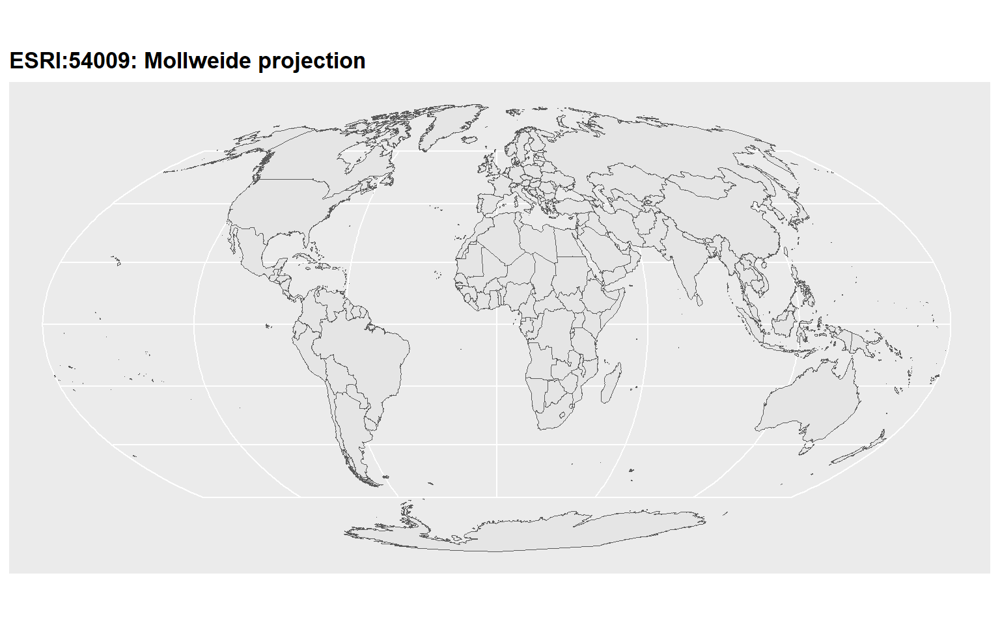
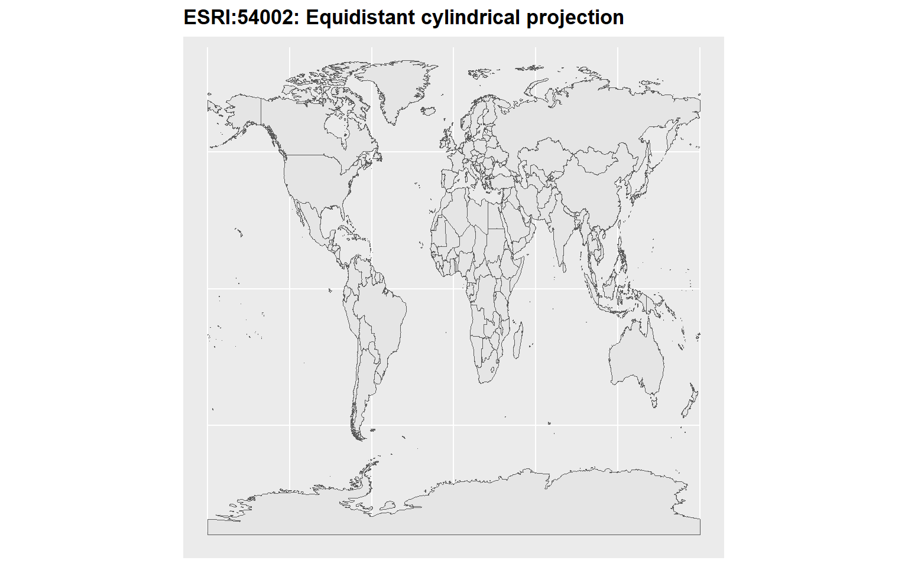
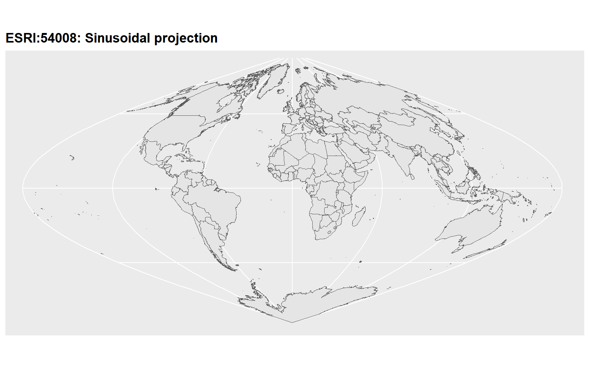

6 Spatial Data Visualisation
6.1 R packages for spatial data analysis
rgdal
sp
rgeos
raster
sf
tmap
leaflet
ggmap
maptools
gstat
spatstat
stars
geosphere
RgoogleMaps
rasterVis
6.2 Geospatial vector data structures
-
Point: Individual longitude and latitude of locations
Eg: Locations, Buildings
-
Lines: Two or more vertices or points that are connected
Eg: Roads, rivers
-
Polygons: Three or more vertices and closed
Eg: Area of a country, state, district
6.3 Challenge in Spatial Data Viualisation
Move from

to
How to transform this three dimensional angular system to a two dimensional cartesian system?
Solution: Spatial Projections
6.4 Map Projection
A projection is about the geometric transformation from 3D to 2D.
A map projection is a method or mathematical formula to represent the curved surface of the Earth on a flat map.
It focuses on how the Earth’s surface is “flattened”, which always introduces some distortion in area, shape, distance, or direction.
Examples:
Mercator (preserves direction)
Albers Equal-Area Conic (preserves area)
Goode Homolosine (minimizes distortion globally)
6.5 Types of Map Projections
Cylindrical Projections
Imagine wrapping a cylinder around the Earth and projecting the surface onto it.
Characteristics:
Meridians and parallels are straight and perpendicular.
Distortion increases away from the equator.
Example:
Mercator Projection – preserves direction, but greatly distorts area near the poles.
Conical Projections
Imagine wrapping a cone over the Earth, usually touching at one or two standard parallels.
Characteristics:
Parallels appear as arcs; meridians converge toward a point.
Best for mid-latitude regions with an east–west extent.
Example:
Albers Equal-Area Conic – preserves area, commonly used for countries or regions.
Planar (Azimuthal) Projections
The Earth’s surface is projected onto a flat plane, usually touching at a single point.
Characteristics:
Distortion increases outward from the point of tangency.
Can preserve distance, area, or shape depending on the type.
Example:
Goode Homolosine – minimizes global distortion by combining multiple projection methods.
Visit here to see the visual illustration.
{kind=link}
6.6 Example maps




6.7 Why Multiple Map Projection Types Exist
The Earth is round, but maps are flat. Because no flat map can perfectly preserve all properties of the globe, every projection introduces some distortion. Different projections are therefore designed to preserve certain properties depending on the map’s purpose.
Key Reasons for Multiple Projection Types
- Different Types of Distortion
Shape (conformal) – keeps angles and shapes correct (e.g., Mercator).
Area (equal-area / equivalent) – keeps relative sizes correct (e.g., Albers Equal-Area Conic).
Distance (equidistant) – preserves distances from a point or along certain lines (e.g., Azimuthal Equidistant).
Direction (azimuthal / navigational) – preserves angles and compass bearings (e.g., Mercator for navigation).
- Geographical Focus
Some projections are better for global maps, others for regional or local maps.
Example: Conical projections work well for mid-latitude countries, while planar projections work for polar regions.
- Practical Applications
Navigation – need accurate direction → Mercator.
Thematic / statistical maps – need accurate area → Albers Equal-Area.
Minimizing overall distortion – Goode Homolosine for global thematic maps.
6.8 Quick Comparison Table
In-class
6.9 Coordinate Reference System (CRS)
A CRS is a complete spatial reference framework that defines:
-
How coordinates relate to the Earth (datum)
A datum defines the mathematical Earth model and reference point for coordinates, ensuring that latitude, longitude, and height correspond to real positions on the Earth.)
The map projection used (if any)
6.10 What is a Datum?
A datum is a mathematical model of the Earth that defines:
The size and shape of the Earth (ellipsoid or spheroid)
The origin and orientation of the coordinate system (where latitude 0°, longitude 0° are defined)
In short, a datum tells us where “zero” is and how the coordinates are measured on the Earth’s surface.
6.11 Why is a Datum Important?
Different datums model the Earth slightly differently, so the same latitude/longitude may correspond to different locations depending on the datum.
Example:
WGS84 → used by GPS
NAD83 → used in North America
A coordinate of 40°N, 75°W will be slightly different on WGS84 vs NAD83 because the reference ellipsoid is slightly shifted.
6.12 Projection vs CRS
Projection = method to flatten the Earth
CRS = full system that defines the Earth model + projection + coordinate rules
6.13 Shapefile
A shapefile is a popular geospatial vector data format used to store geographic features like points, lines, and polygons, along with their attributes. It’s commonly used in GIS (Geographic Information Systems) and mapping software, including R (sf or rgdal packages).
A shapefile actually consists of several files that work together. The main ones are:
| File Extension | Purpose |
|---|---|
| .shp | Geometry of features (points, lines, polygons) |
| .shx | Shape index (helps software find features quickly) |
| .dbf | Attribute data (like a spreadsheet) |
| .prj | Projection information (coordinate reference system) |
| .cpg | Encoding of text attributes (optional) |
6.14 R Example
Simple feature collection with 6 features and 168 fields
Geometry type: MULTIPOLYGON
Dimension: XY
Bounding box: xmin: -73.36621 ymin: -22.40205 xmax: 109.4449 ymax: 41.9062
Geodetic CRS: WGS 84
featurecla scalerank labelrank sovereignt sov_a3 adm0_dif level
1 Admin-0 country 1 3 Zimbabwe ZWE 0 2
2 Admin-0 country 1 3 Zambia ZMB 0 2
3 Admin-0 country 1 3 Yemen YEM 0 2
4 Admin-0 country 3 2 Vietnam VNM 0 2
5 Admin-0 country 5 3 Venezuela VEN 0 2
6 Admin-0 country 6 6 Vatican VAT 0 2
type tlc admin adm0_a3 geou_dif geounit gu_a3 su_dif
1 Sovereign country 1 Zimbabwe ZWE 0 Zimbabwe ZWE 0
2 Sovereign country 1 Zambia ZMB 0 Zambia ZMB 0
3 Sovereign country 1 Yemen YEM 0 Yemen YEM 0
4 Sovereign country 1 Vietnam VNM 0 Vietnam VNM 0
5 Sovereign country 1 Venezuela VEN 0 Venezuela VEN 0
6 Sovereign country 1 Vatican VAT 0 Vatican VAT 0
subunit su_a3 brk_diff name name_long brk_a3 brk_name brk_group
1 Zimbabwe ZWE 0 Zimbabwe Zimbabwe ZWE Zimbabwe <NA>
2 Zambia ZMB 0 Zambia Zambia ZMB Zambia <NA>
3 Yemen YEM 0 Yemen Yemen YEM Yemen <NA>
4 Vietnam VNM 0 Vietnam Vietnam VNM Vietnam <NA>
5 Venezuela VEN 0 Venezuela Venezuela VEN Venezuela <NA>
6 Vatican VAT 0 Vatican Vatican VAT Vatican <NA>
abbrev postal formal_en
1 Zimb. ZW Republic of Zimbabwe
2 Zambia ZM Republic of Zambia
3 Yem. YE Republic of Yemen
4 Viet. VN Socialist Republic of Vietnam
5 Ven. VE Bolivarian Republic of Venezuela
6 Vat. V State of the Vatican City
formal_fr name_ciawf note_adm0 note_brk
1 <NA> Zimbabwe <NA> <NA>
2 <NA> Zambia <NA> <NA>
3 <NA> Yemen <NA> <NA>
4 <NA> Vietnam <NA> <NA>
5 República Bolivariana de Venezuela Venezuela <NA> <NA>
6 <NA> Holy See (Vatican City) <NA> <NA>
name_sort name_alt mapcolor7 mapcolor8 mapcolor9 mapcolor13 pop_est
1 Zimbabwe <NA> 1 5 3 9 14645468
2 Zambia <NA> 5 8 5 13 17861030
3 Yemen, Rep. <NA> 5 3 3 11 29161922
4 Vietnam <NA> 5 6 5 4 96462106
5 Venezuela, RB <NA> 1 3 1 4 28515829
6 Vatican (Holy See) Holy See 1 3 4 2 825
pop_rank pop_year gdp_md gdp_year economy
1 14 2019 21440 2019 5. Emerging region: G20
2 14 2019 23309 2019 7. Least developed region
3 15 2019 22581 2019 7. Least developed region
4 16 2019 261921 2019 5. Emerging region: G20
5 15 2019 482359 2014 5. Emerging region: G20
6 2 2019 -99 2019 2. Developed region: nonG7
income_grp fips_10 iso_a2 iso_a2_eh iso_a3 iso_a3_eh iso_n3
1 5. Low income ZI ZW ZW ZWE ZWE 716
2 4. Lower middle income ZA ZM ZM ZMB ZMB 894
3 4. Lower middle income YM YE YE YEM YEM 887
4 4. Lower middle income VM VN VN VNM VNM 704
5 3. Upper middle income VE VE VE VEN VEN 862
6 2. High income: nonOECD VT VA VA VAT VAT 336
iso_n3_eh un_a3 wb_a2 wb_a3 woe_id woe_id_eh woe_note
1 716 716 ZW ZWE 23425004 23425004 Exact WOE match as country
2 894 894 ZM ZMB 23425003 23425003 Exact WOE match as country
3 887 887 RY YEM 23425002 23425002 Exact WOE match as country
4 704 704 VN VNM 23424984 23424984 Exact WOE match as country
5 862 862 VE VEN 23424982 23424982 Exact WOE match as country
6 336 336 -99 -99 23424986 23424986 Exact WOE match as country
adm0_iso adm0_diff adm0_tlc adm0_a3_us adm0_a3_fr adm0_a3_ru adm0_a3_es
1 ZWE <NA> ZWE ZWE ZWE ZWE ZWE
2 ZMB <NA> ZMB ZMB ZMB ZMB ZMB
3 YEM <NA> YEM YEM YEM YEM YEM
4 VNM <NA> VNM VNM VNM VNM VNM
5 VEN <NA> VEN VEN VEN VEN VEN
6 VAT <NA> VAT VAT VAT VAT VAT
adm0_a3_cn adm0_a3_tw adm0_a3_in adm0_a3_np adm0_a3_pk adm0_a3_de adm0_a3_gb
1 ZWE ZWE ZWE ZWE ZWE ZWE ZWE
2 ZMB ZMB ZMB ZMB ZMB ZMB ZMB
3 YEM YEM YEM YEM YEM YEM YEM
4 VNM VNM VNM VNM VNM VNM VNM
5 VEN VEN VEN VEN VEN VEN VEN
6 VAT VAT VAT VAT VAT VAT VAT
adm0_a3_br adm0_a3_il adm0_a3_ps adm0_a3_sa adm0_a3_eg adm0_a3_ma adm0_a3_pt
1 ZWE ZWE ZWE ZWE ZWE ZWE ZWE
2 ZMB ZMB ZMB ZMB ZMB ZMB ZMB
3 YEM YEM YEM YEM YEM YEM YEM
4 VNM VNM VNM VNM VNM VNM VNM
5 VEN VEN VEN VEN VEN VEN VEN
6 VAT VAT VAT VAT VAT VAT VAT
adm0_a3_ar adm0_a3_jp adm0_a3_ko adm0_a3_vn adm0_a3_tr adm0_a3_id adm0_a3_pl
1 ZWE ZWE ZWE ZWE ZWE ZWE ZWE
2 ZMB ZMB ZMB ZMB ZMB ZMB ZMB
3 YEM YEM YEM YEM YEM YEM YEM
4 VNM VNM VNM VNM VNM VNM VNM
5 VEN VEN VEN VEN VEN VEN VEN
6 VAT VAT VAT VAT VAT VAT VAT
adm0_a3_gr adm0_a3_it adm0_a3_nl adm0_a3_se adm0_a3_bd adm0_a3_ua adm0_a3_un
1 ZWE ZWE ZWE ZWE ZWE ZWE -99
2 ZMB ZMB ZMB ZMB ZMB ZMB -99
3 YEM YEM YEM YEM YEM YEM -99
4 VNM VNM VNM VNM VNM VNM -99
5 VEN VEN VEN VEN VEN VEN -99
6 VAT VAT VAT VAT VAT VAT -99
adm0_a3_wb continent region_un subregion
1 -99 Africa Africa Eastern Africa
2 -99 Africa Africa Eastern Africa
3 -99 Asia Asia Western Asia
4 -99 Asia Asia South-Eastern Asia
5 -99 South America Americas South America
6 -99 Europe Europe Southern Europe
region_wb name_len long_len abbrev_len tiny homepart
1 Sub-Saharan Africa 8 8 5 -99 1
2 Sub-Saharan Africa 6 6 6 -99 1
3 Middle East & North Africa 5 5 4 -99 1
4 East Asia & Pacific 7 7 5 2 1
5 Latin America & Caribbean 9 9 4 -99 1
6 Europe & Central Asia 7 7 4 4 1
min_zoom min_label max_label label_x label_y ne_id wikidataid
1 0 2.5 8.0 29.92544 -18.911640 1159321441 Q954
2 0 3.0 8.0 26.39530 -14.660804 1159321439 Q953
3 0 3.0 8.0 45.87438 15.328226 1159321425 Q805
4 0 2.0 7.0 105.38729 21.715416 1159321417 Q881
5 0 2.5 7.5 -64.59938 7.182476 1159321411 Q717
6 0 5.0 10.0 12.45342 41.903323 1159321407 Q237
name_ar name_bn name_de name_en name_es
1 زيمبابوي জিম্বাবুয়ে Simbabwe Zimbabwe Zimbabue
2 زامبيا জাম্বিয়া Sambia Zambia Zambia
3 اليمن ইয়েমেন Jemen Yemen Yemen
4 فيتنام ভিয়েতনাম Vietnam Vietnam Vietnam
5 فنزويلا ভেনেজুয়েলা Venezuela Venezuela Venezuela
6 الفاتيكان ভ্যাটিকান সিটি Vatikanstadt Vatican City Ciudad del Vaticano
name_fa name_fr name_el name_he name_hi name_hu
1 زیمبابوه Zimbabwe Ζιμπάμπουε זימבבואה ज़िम्बाब्वे Zimbabwe
2 زامبیا Zambie Ζάμπια זמביה ज़ाम्बिया Zambia
3 یمن Yémen Υεμένη תימן यमन Jemen
4 ویتنام Viêt Nam Βιετνάμ וייטנאם वियतनाम Vietnám
5 ونزوئلا Venezuela Βενεζουέλα ונצואלה वेनेज़ुएला Venezuela
6 واتیکان Cité du Vatican Βατικανό קריית הוותיקן वैटिकन नगर Vatikán
name_id name_it name_ja name_ko name_nl name_pl
1 Zimbabwe Zimbabwe ジンバブエ 짐바브웨 Zimbabwe Zimbabwe
2 Zambia Zambia ザンビア 잠비아 Zambia Zambia
3 Yaman Yemen イエメン 예멘 Jemen Jemen
4 Vietnam Vietnam ベトナム 베트남 Vietnam Wietnam
5 Venezuela Venezuela ベネズエラ 베네수엘라 Venezuela Wenezuela
6 Vatikan Città del Vaticano バチカン 바티칸 시국 Vaticaanstad Watykan
name_pt name_ru name_sv name_tr name_uk name_ur
1 Zimbábue Зимбабве Zimbabwe Zimbabve Зімбабве زمبابوے
2 Zâmbia Замбия Zambia Zambiya Замбія زیمبیا
3 Iémen Йемен Jemen Yemen Ємен یمن
4 Vietname Вьетнам Vietnam Vietnam В'єтнам ویتنام
5 Venezuela Венесуэла Venezuela Venezuela Венесуела وینیزویلا
6 Vaticano Ватикан Vatikanstaten Vatikan Ватикан ویٹیکن سٹی
name_vi name_zh name_zht fclass_iso tlc_diff fclass_tlc
1 Zimbabwe 津巴布韦 辛巴威 Admin-0 country <NA> Admin-0 country
2 Zambia 赞比亚 尚比亞 Admin-0 country <NA> Admin-0 country
3 Yemen 也门 葉門 Admin-0 country <NA> Admin-0 country
4 Việt Nam 越南 越南 Admin-0 country <NA> Admin-0 country
5 Venezuela 委内瑞拉 委內瑞拉 Admin-0 country <NA> Admin-0 country
6 Thành Vatican 梵蒂冈 梵蒂岡 Admin-0 country <NA> Admin-0 country
fclass_us fclass_fr fclass_ru fclass_es fclass_cn fclass_tw fclass_in
1 <NA> <NA> <NA> <NA> <NA> <NA> <NA>
2 <NA> <NA> <NA> <NA> <NA> <NA> <NA>
3 <NA> <NA> <NA> <NA> <NA> <NA> <NA>
4 <NA> <NA> <NA> <NA> <NA> <NA> <NA>
5 <NA> <NA> <NA> <NA> <NA> <NA> <NA>
6 <NA> <NA> <NA> <NA> <NA> <NA> <NA>
fclass_np fclass_pk fclass_de fclass_gb fclass_br fclass_il fclass_ps
1 <NA> <NA> <NA> <NA> <NA> <NA> <NA>
2 <NA> <NA> <NA> <NA> <NA> <NA> <NA>
3 <NA> <NA> <NA> <NA> <NA> <NA> <NA>
4 <NA> <NA> <NA> <NA> <NA> <NA> <NA>
5 <NA> <NA> <NA> <NA> <NA> <NA> <NA>
6 <NA> <NA> <NA> <NA> <NA> <NA> <NA>
fclass_sa fclass_eg fclass_ma fclass_pt fclass_ar fclass_jp fclass_ko
1 <NA> <NA> <NA> <NA> <NA> <NA> <NA>
2 <NA> <NA> <NA> <NA> <NA> <NA> <NA>
3 <NA> <NA> <NA> <NA> <NA> <NA> <NA>
4 <NA> <NA> <NA> <NA> <NA> <NA> <NA>
5 <NA> <NA> <NA> <NA> <NA> <NA> <NA>
6 <NA> <NA> <NA> <NA> <NA> <NA> <NA>
fclass_vn fclass_tr fclass_id fclass_pl fclass_gr fclass_it fclass_nl
1 <NA> <NA> <NA> <NA> <NA> <NA> <NA>
2 <NA> <NA> <NA> <NA> <NA> <NA> <NA>
3 <NA> <NA> <NA> <NA> <NA> <NA> <NA>
4 <NA> <NA> <NA> <NA> <NA> <NA> <NA>
5 <NA> <NA> <NA> <NA> <NA> <NA> <NA>
6 <NA> <NA> <NA> <NA> <NA> <NA> <NA>
fclass_se fclass_bd fclass_ua geometry
1 <NA> <NA> <NA> MULTIPOLYGON (((31.28789 -2...
2 <NA> <NA> <NA> MULTIPOLYGON (((30.39609 -1...
3 <NA> <NA> <NA> MULTIPOLYGON (((53.08564 16...
4 <NA> <NA> <NA> MULTIPOLYGON (((104.064 10....
5 <NA> <NA> <NA> MULTIPOLYGON (((-60.82119 9...
6 <NA> <NA> <NA> MULTIPOLYGON (((12.43916 41...Coordinate Reference System:
User input: WGS 84
wkt:
GEOGCRS["WGS 84",
DATUM["World Geodetic System 1984",
ELLIPSOID["WGS 84",6378137,298.257223563,
LENGTHUNIT["metre",1]]],
PRIMEM["Greenwich",0,
ANGLEUNIT["degree",0.0174532925199433]],
CS[ellipsoidal,2],
AXIS["latitude",north,
ORDER[1],
ANGLEUNIT["degree",0.0174532925199433]],
AXIS["longitude",east,
ORDER[2],
ANGLEUNIT["degree",0.0174532925199433]],
ID["EPSG",4326]]